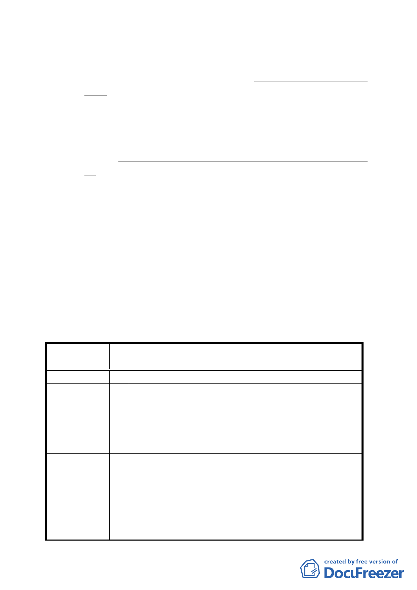

（一）参、計畫原則與構想 一、土地使用（二）回饋量體的配置
方面，為符合社區需求，修正為「回饋量體的配置…等回
饋樓地板配置於西側社區公園，並得視實際規劃內容需要
配置」。
（二）肆、計畫內容 三、特別規定（四）回饋時程「2.於金融服
務專用區（一）、（二）使用執照核發前…，最遲應於民國
98年底以前施工完成」，因應本案回饋設施尚涉社區協商，
增訂「但非可歸責於開發單位之延遲期間，其期限得以展
延。」
（三）肆、計畫內容 三、特別規定（四）回饋時程「3.容積率25
％容積獎勵項目，申請人應於金融服務專用區（一）、（二）
使用執照核發前與市府訂定使用契約」部分，維持原計畫
內容不予變更。
三、 本案陳情意見松山區敦化一小段401-1、402-2地號土地，非
位於本案計畫範圍內，請都市發展局另案或納入松山區通盤
檢討辦理。
四、 公民或團體陳情意見審決如後附綜理表。
臺北市都市計畫委員會公民或團體所提意見綜理表
案
名
修訂「長春路北側、慶城街兩側土地」金融服務專
用區細部計畫案
編 號 1 陳情人 廖修謙、廖秀梅
本人為松山區敦化一小段 401-1 地號（土地面積共計：
65 平方公尺）之土地所有權人，該筆土地為畸零保留地，
陳 情 理 由 依建築法相定需與鄰近土地合併建築以達最小開發規模，
然本計畫案將鄰近土地皆劃設為公園綠地，造成該筆土地
未來無法開發，嚴重影響本人權益。
建議將該筆土地由原住宅區變更為公園綠地，惟該筆土地
建 議 辦 法 之原建築容積依據「都市計畫容積移轉實施辦法」移轉至
同一主要計畫地區範圍內之其他可建築用地建築使用，方
可促進都市土地使用之合理應用。
委 員 會 決 議 本案陳情意見松山區敦化一小段401-1、402-2地號土地，
非位於本案計畫範圍內，請都市發展局另案或納入松山區
-3-